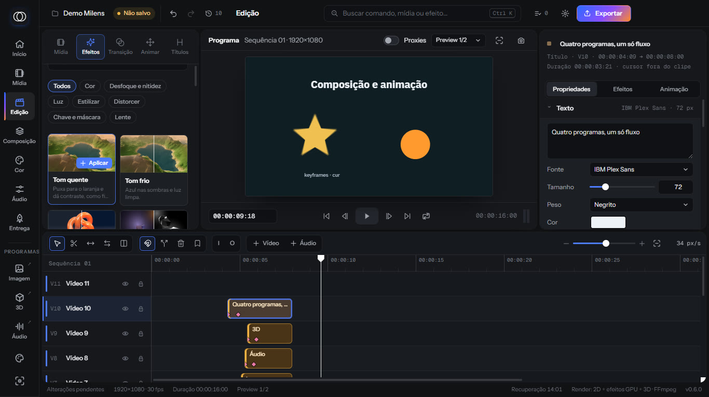

Efeitos externos que rodam isolados na placa de vídeo: se um shader falhar, o projeto continua abrindo. Vêm com prévia na biblioteca e controles com nome no inspetor. Faz parte do plano PRO.

A biblioteca de efeitos: cada miniatura mostra o antes e o depois; com o mouse em cima, o efeito varia para mostrar como age.
Para quem usa
Instale uma pasta e pronto
Em Preferências, Plugins, escolha a pasta do plugin. Os efeitos aparecem na hora, na aba Efeitos da biblioteca e no menu de efeitos do inspetor. Dá para ligar e desligar cada pacote.